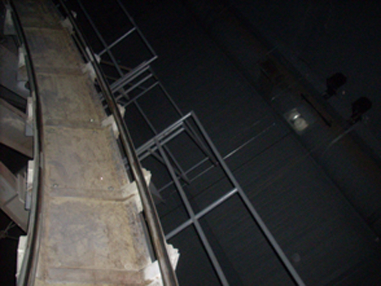
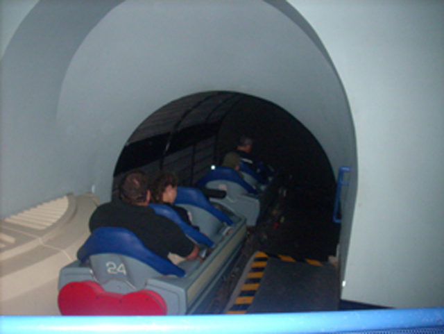
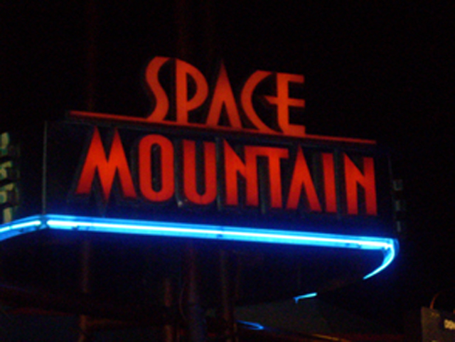
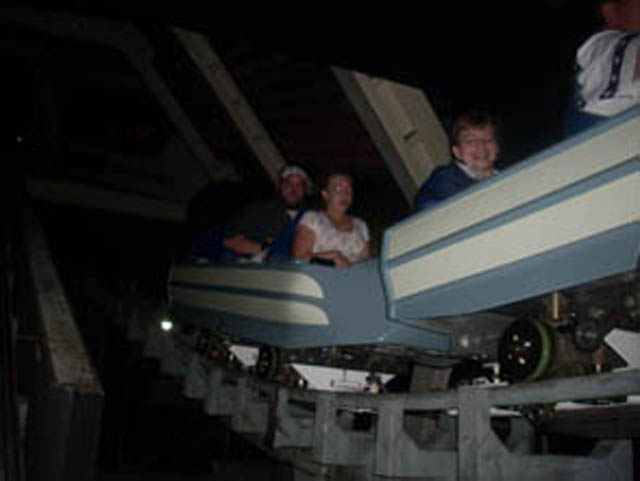

| |
Space Mountain Review

We're here at the Walt Disney World Resort, where we'll be reviewing Space Mtn. After venturing through the long and dark line, you make it to the station. Now here, you can see Space Mtn swirling above your head, and that is awesome. Anyways, we get in the seats and we're off. First we go through the Blue Lights room. Ok, now here's my little pet peeve about California Space Mtn. Why is it that Disney World can master this effect in the 70s, but Disneyland can't get it right when it tries 30 years later? Come on. Here, the blue lights actually simulate speed. Then after some turn, we come towards the lifthill. Now during the lifthill, you can see part of the ride as well as the other track, then once we get to the top, we're off!! I can't really remember the layout. I just know that here, we have drops and airtime. Though some music would be nice. Eventuallly, we see this red light and a flash, and our ride is now over. Recently, they gave Florida Space Mtn a make over. Luckily, from what I've heard, the only main difference is that now you can't see the coaster swirl above you in the station. Oh well. I would TOTALLY recommend you ride this if you go to the Disney World Resort any time soon.
8/10
Location: Walt Disney World Resort
Opened: 1975
Built by: Disney
Last Ridden: November 24, 2007
Space Mountain Photos




Home
|